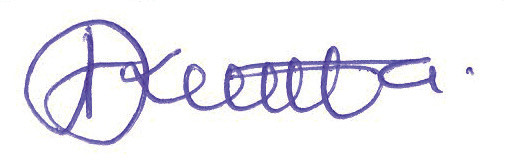

Acknowledgements
The Tanzania Institute of Education (TIE) would like to acknowledge the contributions of all the organisations and individuals who participated in designing and developing this textbook. In particular, TIE wishes to thank the University of Dar es Salaam (UDSM), University of Dodoma (UDOM), Jordan University College (JUCo), the School Quality Assurance (SQA) Department, teachers’ colleges and secondary schools. Besides, the following individuals are acknowledged:
TIE also appreciates contributions from the secondary school teachers and students who participated in the trial phase of the manuscript. Likewise, the Institute would like to thank the Government of the United Republic of Tanzania for financing the writing and printing of this textbook.
